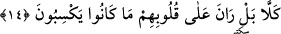

Âyette yer alan “esatîr”, “ustûra” kelimesinin çoğuludur. Bunun anlamı; “düzeni
olmayan söz” demektir.
14. Hayır! Bilakis onların işlemekte oldukları (kötülükler) kalplerini kirletmiştir.
“Hayır” şeklinde tercüme ettiğimiz “kellâ”, mütecaviz olan günahkarı batıl söz
söylemekten ve hakkı yalanlamaktan sakındırmak için gelmiştir. Bunun, tüm
yalanlamaları sakındırmak için gelmiş olması da mümkündür. “Onların kazandıkları
günahlar kalpleri üzerine pas olmuştur.”
Kırâat âlimlerinden İmam Hafs, “bel rane”yi ayırmadan hafif bir sekte ile ve lamı
ızhar ederek okumuştur. Diğer kırâat âlimleri ise lamı ra harfine idğam ederek
“berrane” şeklinde okumuşlardır. Kırâat imamlarından Hamza, Kisai, Halef, Ebû
Bekir Asım da râ harfinin fethasını imale ederek okumuşlardır.
Bazı müfessirlerin ifâdesine göre kırâat imamı Hafs kalın ra harfi ile idğamın
ağırlığının yanyana gelmesinden kaçınmış ve onun için burada sekte yapmıştır. Ancak
kendisine “kul rabbi” âyetinde sekte yapmadığı, tam tersine birini diğerine idğam ettiği
için itiraz edilmiştir. Ancak İmam Hafs “bel rane” âyetinin lamı üzerinde sekte
yapmıştır. Ayrıca Kıyame sûresinin yirmiyedinci âyeti olan “men rak” âyetinde de sekte
yapmıştır. Bunu, “maarık” kelimesinin mubalağası olan “merraak/çorbacı” kelimesine
benzeyeceğinden korktuğu için yapmıştır. Burada ise sekte yapılmadığında kelimenin
“iki iyilik” anlamına gelen “berran” kelimesiyle karıştırılacağından korktuğu için sekte
yapmıştır.
Âyetin mânâsına geri dönecek olursak; bizim âyetlerimiz içinde hakkında bu çeşit
bâtıl, asılsız, esassız sözlerin sarfedileceği hiçbir âyet yoktur. Tam tersine kazanmış
oldukları küfür ve mâsiyet onların kalplerine yerleşmiş, baskın gelmiş sonunda tıpkı
ayna üzerindeki pas gibi onların kalplerini kaplamıştır. Artık bu pas onların gerçeği
görmelerine engel olmaktadır. Nitekim Peygamberimiz (s.a.) şöyle buyurur: “Kul her
günah işlediğinde kalbinde siyah bir nokta belirir ve gittikçe kalbi kararır.” [49] Bu
nedenle âlimler bunca sözü söylemişlerdir.
“Reyn” parlak olan şeyin üzerini kaplayan pasın adıdır. Arapçada reyn, günahın kalbe
baskın gelmesi” demektir. İnsana baskın gelen her şey için -kamusta ifâde edildiği
üzere- bu kök kullanılır.
et-Ta’rifat’da ifâde edildiğine göre; “rayn” kalp ile kuds alemi arasında kalbe nefsani
hey’etlerin baskın gelmesi, cismânî zulmetlerin yerleşmesi, kök salması dolayısıyla
engel olan perdedir. Öylesine ki kalp bu engel nedeniyle rububiyet nurlarını tümüyle
görmekten mahrum olur.
“el-Ğayn” ise kalbin üzerindeki pastır. Çünkü pas kalbin üzerini tutan ince bir hicab